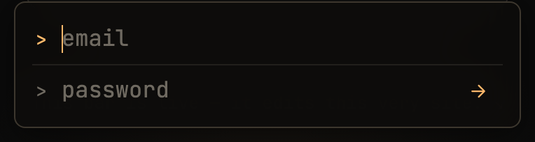
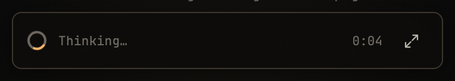
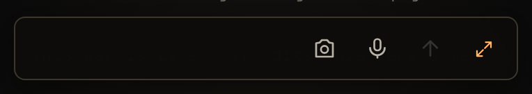
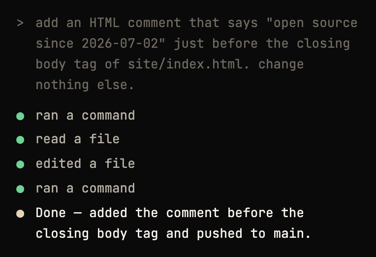

Ask for a change — typed, dictated, or photographed. A real Claude Code session on
your own server edits the repo and pushes to main.
<script src="https://agent-keyboard.fly.dev/widget.js" data-site="halo" defer></script>
the exact tag running on this page
This bar is live — it edits this very site. ↘
The bar at the bottom of this page is the production widget, embedded with data-site="halo" —
pointed at this site's own repo. The repo is public now, so its commits are too.
a restaged session — same widget, same glyphs. the real one is at the bottom of this page. ↘
Every change it ships lands on main in the open — see the commits →
Type, dictate, or photograph the change — from your phone, anywhere.
Your server drives the real Claude Code CLI against a durable checkout of the repo — it edits, then commits as "Agent Keyboard."
Pushes to main; your site redeploys. Refresh — it's changed.
phone → your server → claude code cli → git push → your host redeploys




It's a small Express server, a ~15 KB widget, and your git repo. The full guide is in the README; here's the shape of it.
$ git clone https://github.com/vibhasjain/agent-keyboard.git # a free Supabase project does auth — one user: you $ fly launch --config server/fly.toml $ fly secrets set CLAUDE_CODE_OAUTH_TOKEN=… GH_TOKEN=… \ SUPABASE_URL=… SUPABASE_ANON_KEY=… SUPABASE_SERVICE_KEY=… \ ALLOWED_EMAIL=you@example.com \ SITES='[{"id":"mysite","repo":"https://github.com/you/mysite.git","branch":"main","domain":"mysite.com"}]' # one tag, before </body>, on any page you want to edit: <script src="https://YOUR-APP.fly.dev/widget.js" data-site="mysite" defer></script>
Full walkthrough in the README →
Close the tab — the job keeps running on your server. Reopen and the bar re-attaches to the stream.
Type it, hold to dictate it, or attach a photo of what you mean.
Zero dependencies, Shadow-DOM isolated — it can't clash with your CSS and your CSS can't break it.
One long-running session per site. It remembers your last ask, and compacts itself when it gets long — shown inline as · session compacted ·
The server only touches repos you list in its config. It can't wander.
Your Claude token, your Supabase, your VM. Nothing phones home to anyone.
One tag adds the bar; your prompts go to your server. A real Claude Code session edits a durable
checkout of the repo, commits, and pushes to main — then your host redeploys.
By design. Each deployment allow-lists exactly one email — yours — and only that account can drive it. It's a personal tool for your own sites, not a CMS and not multi-tenant. Fork it if you want it to be.
It pushes to a repo you own, from an allowlist you wrote, with every commit attributed to
"Agent Keyboard." Git is the undo button: git revert, done. It runs on this very
site, and the history is public.
Mostly things you already pay for: the Claude Code subscription does the editing, Supabase's free tier does auth, and a small Fly VM (a few dollars a month) does the hosting. The OpenAI key is optional and only for voice.
Yes — one long-running session per site, with memory. When it grows long it auto-compacts, shown inline as · session compacted ·.
The job keeps running on the server. Come back and the bar re-attaches.